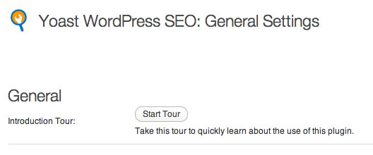
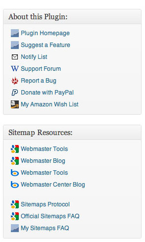
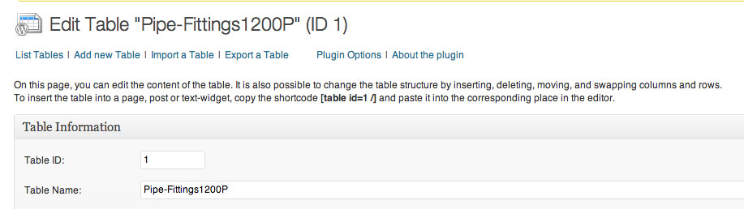
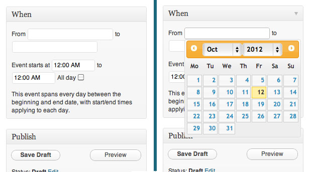
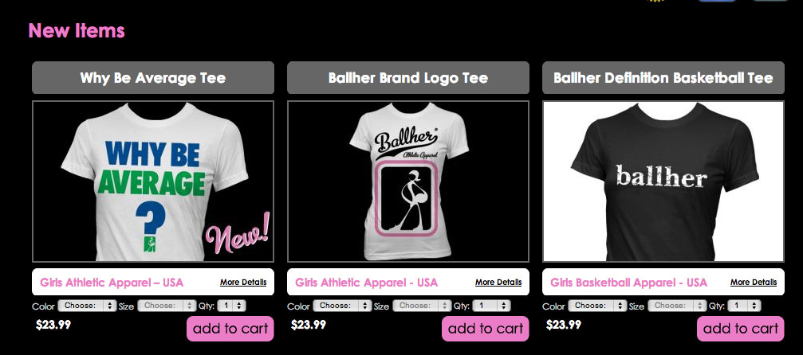
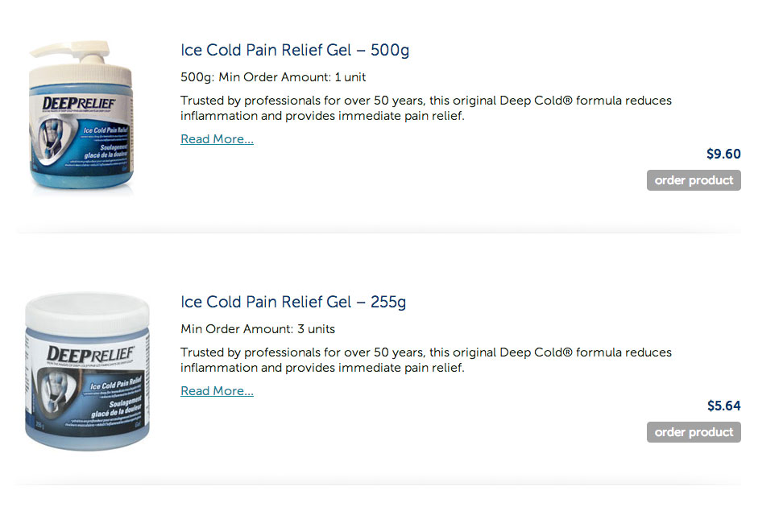

Taking the Intimidation Out of
WordPress Plugin Development
Before you begin:
Always check to make sure you're running the most
recent version of WordPress.
Search WordPress.org and Google to make sure someone has not already solved your problem.
Let's Get Started!
Naming Your Plugin
The main plug-in file needs to be a .php file with a unique file or folder name.
Make it descriptive!
Additionally, if the file name is not unique it will conflict with other plugin-ins.
Check the requirements of the plug-in.
What else do you need?
Action Hooks!
add-action ('hook-name', 'function-name', X,Y);
Allows developers to "hook in" and add stuff to the start or finish loading of WordPress
Triggered by specific events when loading a WordPress site
add-action ('hook-name', 'function-name', X,Y);
hook-name: name of the hook you want to add the action to
add-action (‘hook-name’, ‘function-name’, X,Y);
X: priority argument (which defaults to 10) used to sort actions. The lower the number, the earlier it will get called. Helps make sure that something happens before your function is called.
Y: number of arguments that your function can accept (defaults to 1)
Filter Hooks!
add-filter(‘hook-name’, ‘function-name’, X,Y);
functions that WordPress passes data through - use them to do stuff with data
the_title(), the_content(), the_excerpt() are all popular filter hooks
works the same way as actions - parameters are the same
Page load life-cycle
javascript (remember this needed to be in the footer)
Designing
UX Workflow
How should this plugin work ideally for the
end user?
Make it as intuitive as possible
Include step by step instructions on how to setup and change the settings


Make it easy to use
spell out template tags and where users should place them

streamline data input fields and add visual cues

clearly label everything that the user has to fill out
How will it integrate into various designs and situations?
Think about how the plugin may be used on the page and how much control you want to give the user

